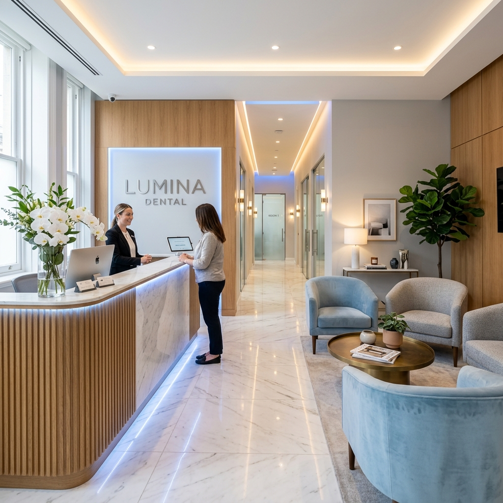

Tecnologia digital de ponta, equipe multidisciplinar de especialistas e mais de 24 anos de tradição em transformar sorrisos com conforto absoluto.
Anos de Tradição
Pacientes Atendidos
Implantes Realizados
Tecnologia Digital
Na Sorriso Prime Odontologia, contamos com uma equipe multidisciplinar. Isso significa que, independentemente do seu problema, temos o especialista correto para o seu caso na mesma clínica.
Solução definitiva para dentes perdidos com tecnologia guiada.
Correção do alinhamento dentário com aparelhos modernos e alinhadores invisíveis.
Recuperação do branco natural dos dentes com laser ou moldeiras.
Facetas ultrafinas de porcelana para transformação completa do sorriso.
Restauração da estética e função com facetas duráveis e naturais.
Reabilitação oral completa com próteses fixas, móveis ou sobre implantes.
Tratamento indolor da raiz do dente com microscopia clínica.
Tratamento de gengivite e periodontite para saúde dos tecidos de suporte.
Atendimento lúdico e especializado para bebês, crianças e adolescentes.
Extrações complexas, sisos e pequenas cirurgias com sedação.
Cirurgias ortognáticas e tratamento de traumas faciais.
Harmonização do sorriso com resinas de alta performance.
Botox e preenchimento para equilibrar a estética da face e do sorriso.
Tratamento para dores na articulação da mandíbula e dores de cabeça.
Controle do ranger de dentes com placas miorrelaxantes e toxina botulínica.
Limpezas profundas, flúor e selantes para evitar cáries e doenças.
Escaneamento 3D e impressão de próteses no mesmo dia.
Nosso processo foi desenhado para garantir previsibilidade, segurança e total conforto, do primeiro contato ao sorriso finalizado.
Contato via WhatsApp ou formulário. Nossa equipe entende sua demanda preliminar e direciona para o especialista mais adequado. Um lembrete digital é enviado com orientações de chegada e estacionamento.
Realizamos escaneamento intraoral 3D da sua boca, fotos em estúdio clínico e radiografias digitais. O especialista examina não apenas os dentes, mas musculatura, gengiva e articulação, garantindo um diagnóstico macro.
O caso é estudado pela equipe multidisciplinar. Apresentamos as opções de tratamento, simulamos o resultado final na tela (Planejamento Digital) e passamos os valores, prazos e formas de parcelamento transparentes.
Com conforto (TV, fone antirruído, mantas) e possibilidade de sedação. Graças à tecnologia digital e laboratório parceiro integrado, as etapas são reduzidas e os resultados mais rápidos e precisos.
Seu sorriso finalizado é nossa responsabilidade contínua. Você entra no programa de retornos preventivos a cada 6 meses (profilaxia clínica), garantindo a longevidade dos implantes, lentes e saúde gengival.
A odontologia analógica ficou no passado. Investimos continuamente em equipamentos alemães e suíços para garantir precisão cirúrgica e conforto ímpar.
Adeus às massinhas de molde desconfortáveis. Mapeamento 100% digital e indolor da sua boca.
Tratamentos de canal com precisão milimétrica, garantindo taxa de sucesso próxima a 100%.
Óxido nitroso para pacientes com fobia. Você relaxa totalmente enquanto cuidamos do seu sorriso.
Veja como seu sorriso vai ficar antes mesmo de começar o tratamento com lentes ou facetas.
Profissionais com mestrado, doutorado e especializações nas melhores instituições do mundo. Aqui, você não é atendido por "qualquer um", mas pelo melhor da área.
Especialista e Mestre em Implantodontia pela USP. Mais de 20 anos de experiência.
Invisalign Top Doctor. Especialista em alinhadores invisíveis e ortopedia facial.
Referência em Lentes de Contato Dental. Pós-graduado pela NYU (Nova York).
Atendimento humanizado para crianças. Especialista em sedação consciente.
Especialista em tratamentos de canal em sessão única utilizando microscopia.
Especialista em simetria facial, botox e preenchedores ácido hialurônico.
Trabalhamos com os melhores convênios do mercado, tanto por credenciamento direto quanto pelo vantajoso sistema de Livre Escolha e Reembolso. Nossa equipe administrativa cuida de toda a burocracia do reembolso para você.
Acreditamos que a saúde bucal de excelência deve ser acessível. Oferecemos opções transparentes e justas para a viabilização do seu tratamento de alto padrão.
Parcelamento facilitado em todos os cartões. Aceitamos divisão do valor em múltiplos cartões.
Para procedimentos como Implantes e Lentes, dispomos de crédito via boleto mediante aprovação financeira.
Pacientes que optam por pagamentos à vista recebem descontos agressivos sobre o valor da tabela.
Transformamos mais de 45.000 vidas através do sorriso. Conheça algumas dessas histórias reais de superação e autoestima restaurada.
"A equipe da Sorriso Prime mudou minha vida. O que mais me impressionou não foi apenas o resultado perfeito, mas o atendimento humano, sem dor, e a segurança em cada etapa."
Duração: 11 meses
"A equipe da Sorriso Prime mudou minha vida. O que mais me impressionou não foi apenas o resultado perfeito, mas o atendimento humano, sem dor, e a segurança em cada etapa."
Duração: 1 meses
"A equipe da Sorriso Prime mudou minha vida. O que mais me impressionou não foi apenas o resultado perfeito, mas o atendimento humano, sem dor, e a segurança em cada etapa."
Duração: 5 meses
Nossa equipe de especialistas catalogou e respondeu centenas das perguntas mais comuns de nossos pacientes. Esta é uma das bases de informação odontológica mais completas do Brasil.
Sua primeira consulta na Sorriso Prime é um momento de descobertas. Realizamos um exame clínico completo, fotos digitais do seu sorriso, escaneamento 3D (se necessário) e radiografias iniciais. O dentista especialista conversará sobre suas expectativas, histórico médico e odontológico, e apresentará um plano de tratamento detalhado, explicando cada etapa, custos e prazos.
Geralmente reservamos de 45 a 60 minutos para a primeira avaliação. Queremos ter tempo suficiente para ouvir você, realizar exames essenciais e explicar tudo sem pressa.
Se você tiver radiografias recentes (menos de 6 meses), traga-as. Caso não tenha, não se preocupe: possuímos equipamento de radiografia digital na própria clínica para realizar os exames na hora, com baixíssima radiação.
Na grande maioria dos casos, sim. O dentista responsável já elabora o planejamento e nossa equipe de atendimento apresenta as opções de valores e parcelamentos logo após a avaliação clínica. Casos cirúrgicos complexos podem necessitar de 24h para estudo detalhado.
Trabalhamos com consultas particulares de alto valor agregado. A consulta de avaliação tem um custo que é 100% revertido como crédito em seu tratamento, caso você decida iniciar conosco. Consulte nossa central para valores atualizados.
Sim. Reservamos horários diários exclusivamente para encaixes de urgência. Entre em contato imediatamente pelo nosso WhatsApp relatando a dor, e nossa equipe priorizará seu atendimento no mesmo dia.
Mantenha a calma. Se possível, guarde o fragmento do dente em soro fisiológico ou leite. Evite mastigar do lado afetado e tome cuidado com alimentos quentes ou gelados. Agende uma urgência conosco o mais rápido possível para avaliação de restauração ou colagem.
Não é normal. Sangramento gengival (ao escovar ou passar fio dental) é o principal sintoma de gengivite ou periodontite. Requer uma avaliação periodontal e profilaxia (limpeza profunda) para evitar a perda óssea em volta do dente.
A sensibilidade é uma dor aguda, rápida, como um "choque" ao ingerir algo gelado, quente ou doce, que passa logo após o estímulo. A dor de canal (pulpite) é espontânea, latejante, não passa, piora ao deitar e muitas vezes não cessa nem com analgésicos fortes.
O implante é um pino de titânio (material totalmente biocompatível) posicionado cirurgicamente no osso maxilar ou mandibular, abaixo da gengiva. Ele substitui a raiz do dente perdido e serve de base para a fixação de uma coroa (dente artificial) de porcelana.
Não. A cirurgia de instalação do implante é feita sob anestesia local (a mesma usada para uma restauração simples). Para pacientes ansiosos, oferecemos a opção de Sedação Consciente com óxido nitroso. O pós-operatório, seguindo as medicações prescritas, costuma ser indolor e muito tranquilo.
O titânio é um material inerte, portanto não existe "rejeição" imunológica (como ocorre em transplantes de órgãos). O que pode ocorrer em raros casos (cerca de 2% a 5%) é a falha na osseointegração (o osso não abraçar o pino), geralmente associada a fumo, diabetes descontrolada ou infecções prévias.
No protocolo tradicional, aguarda-se de 3 a 6 meses para a cicatrização óssea (osseointegração). Porém, dependendo da qualidade do seu osso, podemos realizar o "Implante de Carga Imediata", onde o pino e o dente provisório são instalados no mesmo dia!
É uma técnica avançada onde o dente artificial provisório é fixado sobre o implante no mesmo momento da cirurgia. Assim, o paciente não fica sem dente em nenhum momento. Requer condições ósseas excelentes, avaliadas via tomografia prévia.
Apenas se você perdeu o dente há muitos anos e o osso da região sofreu reabsorção (afinou). A tomografia 3D nos mostrará exatamente o volume ósseo disponível. Se necessário, realizamos o enxerto no mesmo momento do implante ou meses antes, dependendo do caso.
São lâminas ultrafinas de porcelana (com cerca de 0.2mm a 0.5mm de espessura) coladas sobre os dentes naturais para alterar cor, formato, tamanho ou corrigir pequenos desalinhamentos, criando um sorriso perfeitamente harmonioso.
A diferença é a espessura. A Lente de Contato é extremamente fina e requer mínimo ou nenhum desgaste do dente natural. A Faceta é um pouco mais espessa e geralmente exige um desgaste maior do dente para acomodar o material, sendo ideal para dentes muito escurecidos ou manchados.
Não. Diferente das resinas, as Lentes de Contato de porcelana possuem uma superfície vitrificada altamente resistente que não absorve pigmentos. Elas não amarelam, não mancham com café, vinho ou cigarro, mantendo a cor original por muitos anos.
Com os cuidados adequados de higiene (escovação, fio dental) e visitas regulares a cada 6 meses para profilaxia, as lentes de porcelana podem durar 10, 15 ou mais de 20 anos. São altamente resistentes e duráveis.
O procedimento é indolor. Quando é necessário algum desgaste mínimo, utilizamos anestesia local. O paciente passa por uma sessão de moldagem/escaneamento, uma de teste do sorriso (mockup) e a sessão final de cimentação (colagem) definitiva.
São placas transparentes e removíveis (como o Invisalign) feitas sob medida através de escaneamento 3D. Elas aplicam forças suaves para mover os dentes para a posição correta. São praticamente imperceptíveis e muito mais confortáveis que aparelhos fixos.
A cada troca de placa (geralmente a cada 7 ou 14 dias), você pode sentir uma leve pressão nos dentes nos primeiros dois dias, o que significa que os dentes estão se movendo. É um desconforto muito menor do que os tradicionais "apertos" do aparelho metálico.
Em muitos casos, sim! Como o planejamento é feito por software 3D (ClinCheck), a movimentação é extremamente precisa. Casos que levariam 2 anos com aparelho fixo podem ser resolvidos em 8 a 12 meses com alinhadores, dependendo da colaboração do paciente no uso (22h por dia).
Sim! Essa é uma das maiores vantagens. Você remove o alinhador para fazer suas refeições e para escovar os dentes e passar o fio dental. Não há restrições alimentares (como evitar amendoim ou pipoca), garantindo total liberdade e higiene perfeita.
Sim, aparelhos fixos metálicos ou de porcelana (estéticos) continuam sendo opções excelentes e acessíveis para corrigir o alinhamento. A escolha entre fixo e alinhador invisível depende do diagnóstico do ortodontista e da preferência/orçamento do paciente.
Mito. O clareamento feito com supervisão do dentista é totalmente seguro. Os agentes clareadores agem quebrando as moléculas de pigmento dentro do dente, sem causar nenhum desgaste ou alteração na estrutura do esmalte.
O clareamento em si não dói. No entanto, alguns pacientes podem apresentar sensibilidade dentária temporária durante o tratamento. Na Sorriso Prime, utilizamos géis modernos com dessensibilizantes na fórmula e prescrevemos cremes dentais específicos para garantir seu conforto.
Ambos são eficazes! O clareamento de consultório (laser/LED) oferece resultados rápidos em 1 ou 2 sessões. O caseiro (com moldeiras) é feito em casa por cerca de 14 a 21 dias. Frequentemente recomendamos a "Técnica Mista", que une os dois métodos para um resultado mais branco e duradouro.
Depende dos seus hábitos. O resultado costuma durar de 1 a 3 anos. Pacientes que consomem muito café, vinho tinto, chás escuros ou que fumam tendem a perder o brilho mais rápido. Recomendamos um "retoque" anual para manter os dentes sempre brancos.
Atendemos diversos planos de saúde na modalidade de reembolso. Além disso, somos credenciados para procedimentos específicos de parceiros como Amil Dental Premium e Bradesco Dental Top. Consulte nossa equipe de atendimento informando o número da sua carteirinha para verificarmos a cobertura exata.
Oferecemos excelentes condições. Você pode parcelar seu tratamento em até 12x sem juros no cartão de crédito. Para procedimentos maiores (como implantes e lentes), oferecemos financiamento próprio ou via parceiros financeiros em até 24 a 36 parcelas, sujeito a análise de crédito.
Sim. Pagamentos à vista (PIX ou dinheiro) possuem descontos especiais exclusivos. Para boletos, temos parcerias com financeiras que permitem o parcelamento mensal (sujeito à aprovação de crédito).
O Conselho Federal de Odontologia (CFO) nos proíbe de passar orçamentos precisos sem uma avaliação clínica presencial. O valor varia enormemente dependendo da necessidade de osso, tipo de pino (nacional ou suíço) e material da coroa. Agende uma avaliação para recebermos seu orçamento completo.
As dúvidas sobre Canal (Endodontia) são muito comuns em nossa clínica. Nossa equipe está altamente preparada para realizar este procedimento utilizando tecnologia de ponta. É fundamental realizar uma avaliação clínica e radiográfica para determinar a complexidade do seu caso específico. Tratamentos de Canal (Endodontia) exigem acompanhamento profissional adequado para garantir longevidade e saúde bucal plena. Recomendamos agendar uma consulta para planejamento detalhado.
As dúvidas sobre Canal (Endodontia) são muito comuns em nossa clínica. Nossa equipe está altamente preparada para realizar este procedimento utilizando tecnologia de ponta. É fundamental realizar uma avaliação clínica e radiográfica para determinar a complexidade do seu caso específico. Tratamentos de Canal (Endodontia) exigem acompanhamento profissional adequado para garantir longevidade e saúde bucal plena. Recomendamos agendar uma consulta para planejamento detalhado.
As dúvidas sobre Canal (Endodontia) são muito comuns em nossa clínica. Nossa equipe está altamente preparada para realizar este procedimento utilizando tecnologia de ponta. É fundamental realizar uma avaliação clínica e radiográfica para determinar a complexidade do seu caso específico. Tratamentos de Canal (Endodontia) exigem acompanhamento profissional adequado para garantir longevidade e saúde bucal plena. Recomendamos agendar uma consulta para planejamento detalhado.
As dúvidas sobre Canal (Endodontia) são muito comuns em nossa clínica. Nossa equipe está altamente preparada para realizar este procedimento utilizando tecnologia de ponta. É fundamental realizar uma avaliação clínica e radiográfica para determinar a complexidade do seu caso específico. Tratamentos de Canal (Endodontia) exigem acompanhamento profissional adequado para garantir longevidade e saúde bucal plena. Recomendamos agendar uma consulta para planejamento detalhado.
As dúvidas sobre Canal (Endodontia) são muito comuns em nossa clínica. Nossa equipe está altamente preparada para realizar este procedimento utilizando tecnologia de ponta. É fundamental realizar uma avaliação clínica e radiográfica para determinar a complexidade do seu caso específico. Tratamentos de Canal (Endodontia) exigem acompanhamento profissional adequado para garantir longevidade e saúde bucal plena. Recomendamos agendar uma consulta para planejamento detalhado.
As dúvidas sobre Periodontia são muito comuns em nossa clínica. Nossa equipe está altamente preparada para realizar este procedimento utilizando tecnologia de ponta. É fundamental realizar uma avaliação clínica e radiográfica para determinar a complexidade do seu caso específico. Tratamentos de Periodontia exigem acompanhamento profissional adequado para garantir longevidade e saúde bucal plena. Recomendamos agendar uma consulta para planejamento detalhado.
As dúvidas sobre Periodontia são muito comuns em nossa clínica. Nossa equipe está altamente preparada para realizar este procedimento utilizando tecnologia de ponta. É fundamental realizar uma avaliação clínica e radiográfica para determinar a complexidade do seu caso específico. Tratamentos de Periodontia exigem acompanhamento profissional adequado para garantir longevidade e saúde bucal plena. Recomendamos agendar uma consulta para planejamento detalhado.
As dúvidas sobre Periodontia são muito comuns em nossa clínica. Nossa equipe está altamente preparada para realizar este procedimento utilizando tecnologia de ponta. É fundamental realizar uma avaliação clínica e radiográfica para determinar a complexidade do seu caso específico. Tratamentos de Periodontia exigem acompanhamento profissional adequado para garantir longevidade e saúde bucal plena. Recomendamos agendar uma consulta para planejamento detalhado.
As dúvidas sobre Periodontia são muito comuns em nossa clínica. Nossa equipe está altamente preparada para realizar este procedimento utilizando tecnologia de ponta. É fundamental realizar uma avaliação clínica e radiográfica para determinar a complexidade do seu caso específico. Tratamentos de Periodontia exigem acompanhamento profissional adequado para garantir longevidade e saúde bucal plena. Recomendamos agendar uma consulta para planejamento detalhado.
As dúvidas sobre Periodontia são muito comuns em nossa clínica. Nossa equipe está altamente preparada para realizar este procedimento utilizando tecnologia de ponta. É fundamental realizar uma avaliação clínica e radiográfica para determinar a complexidade do seu caso específico. Tratamentos de Periodontia exigem acompanhamento profissional adequado para garantir longevidade e saúde bucal plena. Recomendamos agendar uma consulta para planejamento detalhado.
As dúvidas sobre Odontopediatria são muito comuns em nossa clínica. Nossa equipe está altamente preparada para realizar este procedimento utilizando tecnologia de ponta. É fundamental realizar uma avaliação clínica e radiográfica para determinar a complexidade do seu caso específico. Tratamentos de Odontopediatria exigem acompanhamento profissional adequado para garantir longevidade e saúde bucal plena. Recomendamos agendar uma consulta para planejamento detalhado.
As dúvidas sobre Odontopediatria são muito comuns em nossa clínica. Nossa equipe está altamente preparada para realizar este procedimento utilizando tecnologia de ponta. É fundamental realizar uma avaliação clínica e radiográfica para determinar a complexidade do seu caso específico. Tratamentos de Odontopediatria exigem acompanhamento profissional adequado para garantir longevidade e saúde bucal plena. Recomendamos agendar uma consulta para planejamento detalhado.
As dúvidas sobre Odontopediatria são muito comuns em nossa clínica. Nossa equipe está altamente preparada para realizar este procedimento utilizando tecnologia de ponta. É fundamental realizar uma avaliação clínica e radiográfica para determinar a complexidade do seu caso específico. Tratamentos de Odontopediatria exigem acompanhamento profissional adequado para garantir longevidade e saúde bucal plena. Recomendamos agendar uma consulta para planejamento detalhado.
As dúvidas sobre Odontopediatria são muito comuns em nossa clínica. Nossa equipe está altamente preparada para realizar este procedimento utilizando tecnologia de ponta. É fundamental realizar uma avaliação clínica e radiográfica para determinar a complexidade do seu caso específico. Tratamentos de Odontopediatria exigem acompanhamento profissional adequado para garantir longevidade e saúde bucal plena. Recomendamos agendar uma consulta para planejamento detalhado.
As dúvidas sobre Odontopediatria são muito comuns em nossa clínica. Nossa equipe está altamente preparada para realizar este procedimento utilizando tecnologia de ponta. É fundamental realizar uma avaliação clínica e radiográfica para determinar a complexidade do seu caso específico. Tratamentos de Odontopediatria exigem acompanhamento profissional adequado para garantir longevidade e saúde bucal plena. Recomendamos agendar uma consulta para planejamento detalhado.
As dúvidas sobre Siso são muito comuns em nossa clínica. Nossa equipe está altamente preparada para realizar este procedimento utilizando tecnologia de ponta. É fundamental realizar uma avaliação clínica e radiográfica para determinar a complexidade do seu caso específico. Tratamentos de Siso exigem acompanhamento profissional adequado para garantir longevidade e saúde bucal plena. Recomendamos agendar uma consulta para planejamento detalhado.
As dúvidas sobre Siso são muito comuns em nossa clínica. Nossa equipe está altamente preparada para realizar este procedimento utilizando tecnologia de ponta. É fundamental realizar uma avaliação clínica e radiográfica para determinar a complexidade do seu caso específico. Tratamentos de Siso exigem acompanhamento profissional adequado para garantir longevidade e saúde bucal plena. Recomendamos agendar uma consulta para planejamento detalhado.
As dúvidas sobre Siso são muito comuns em nossa clínica. Nossa equipe está altamente preparada para realizar este procedimento utilizando tecnologia de ponta. É fundamental realizar uma avaliação clínica e radiográfica para determinar a complexidade do seu caso específico. Tratamentos de Siso exigem acompanhamento profissional adequado para garantir longevidade e saúde bucal plena. Recomendamos agendar uma consulta para planejamento detalhado.
As dúvidas sobre Siso são muito comuns em nossa clínica. Nossa equipe está altamente preparada para realizar este procedimento utilizando tecnologia de ponta. É fundamental realizar uma avaliação clínica e radiográfica para determinar a complexidade do seu caso específico. Tratamentos de Siso exigem acompanhamento profissional adequado para garantir longevidade e saúde bucal plena. Recomendamos agendar uma consulta para planejamento detalhado.
As dúvidas sobre Siso são muito comuns em nossa clínica. Nossa equipe está altamente preparada para realizar este procedimento utilizando tecnologia de ponta. É fundamental realizar uma avaliação clínica e radiográfica para determinar a complexidade do seu caso específico. Tratamentos de Siso exigem acompanhamento profissional adequado para garantir longevidade e saúde bucal plena. Recomendamos agendar uma consulta para planejamento detalhado.
As dúvidas sobre Prótese Protocolo são muito comuns em nossa clínica. Nossa equipe está altamente preparada para realizar este procedimento utilizando tecnologia de ponta. É fundamental realizar uma avaliação clínica e radiográfica para determinar a complexidade do seu caso específico. Tratamentos de Prótese Protocolo exigem acompanhamento profissional adequado para garantir longevidade e saúde bucal plena. Recomendamos agendar uma consulta para planejamento detalhado.
As dúvidas sobre Prótese Protocolo são muito comuns em nossa clínica. Nossa equipe está altamente preparada para realizar este procedimento utilizando tecnologia de ponta. É fundamental realizar uma avaliação clínica e radiográfica para determinar a complexidade do seu caso específico. Tratamentos de Prótese Protocolo exigem acompanhamento profissional adequado para garantir longevidade e saúde bucal plena. Recomendamos agendar uma consulta para planejamento detalhado.
As dúvidas sobre Prótese Protocolo são muito comuns em nossa clínica. Nossa equipe está altamente preparada para realizar este procedimento utilizando tecnologia de ponta. É fundamental realizar uma avaliação clínica e radiográfica para determinar a complexidade do seu caso específico. Tratamentos de Prótese Protocolo exigem acompanhamento profissional adequado para garantir longevidade e saúde bucal plena. Recomendamos agendar uma consulta para planejamento detalhado.
As dúvidas sobre Prótese Protocolo são muito comuns em nossa clínica. Nossa equipe está altamente preparada para realizar este procedimento utilizando tecnologia de ponta. É fundamental realizar uma avaliação clínica e radiográfica para determinar a complexidade do seu caso específico. Tratamentos de Prótese Protocolo exigem acompanhamento profissional adequado para garantir longevidade e saúde bucal plena. Recomendamos agendar uma consulta para planejamento detalhado.
As dúvidas sobre Prótese Protocolo são muito comuns em nossa clínica. Nossa equipe está altamente preparada para realizar este procedimento utilizando tecnologia de ponta. É fundamental realizar uma avaliação clínica e radiográfica para determinar a complexidade do seu caso específico. Tratamentos de Prótese Protocolo exigem acompanhamento profissional adequado para garantir longevidade e saúde bucal plena. Recomendamos agendar uma consulta para planejamento detalhado.
As dúvidas sobre Sedação são muito comuns em nossa clínica. Nossa equipe está altamente preparada para realizar este procedimento utilizando tecnologia de ponta. É fundamental realizar uma avaliação clínica e radiográfica para determinar a complexidade do seu caso específico. Tratamentos de Sedação exigem acompanhamento profissional adequado para garantir longevidade e saúde bucal plena. Recomendamos agendar uma consulta para planejamento detalhado.
As dúvidas sobre Sedação são muito comuns em nossa clínica. Nossa equipe está altamente preparada para realizar este procedimento utilizando tecnologia de ponta. É fundamental realizar uma avaliação clínica e radiográfica para determinar a complexidade do seu caso específico. Tratamentos de Sedação exigem acompanhamento profissional adequado para garantir longevidade e saúde bucal plena. Recomendamos agendar uma consulta para planejamento detalhado.
As dúvidas sobre Sedação são muito comuns em nossa clínica. Nossa equipe está altamente preparada para realizar este procedimento utilizando tecnologia de ponta. É fundamental realizar uma avaliação clínica e radiográfica para determinar a complexidade do seu caso específico. Tratamentos de Sedação exigem acompanhamento profissional adequado para garantir longevidade e saúde bucal plena. Recomendamos agendar uma consulta para planejamento detalhado.
As dúvidas sobre Sedação são muito comuns em nossa clínica. Nossa equipe está altamente preparada para realizar este procedimento utilizando tecnologia de ponta. É fundamental realizar uma avaliação clínica e radiográfica para determinar a complexidade do seu caso específico. Tratamentos de Sedação exigem acompanhamento profissional adequado para garantir longevidade e saúde bucal plena. Recomendamos agendar uma consulta para planejamento detalhado.
As dúvidas sobre Sedação são muito comuns em nossa clínica. Nossa equipe está altamente preparada para realizar este procedimento utilizando tecnologia de ponta. É fundamental realizar uma avaliação clínica e radiográfica para determinar a complexidade do seu caso específico. Tratamentos de Sedação exigem acompanhamento profissional adequado para garantir longevidade e saúde bucal plena. Recomendamos agendar uma consulta para planejamento detalhado.
As dúvidas sobre Bruxismo são muito comuns em nossa clínica. Nossa equipe está altamente preparada para realizar este procedimento utilizando tecnologia de ponta. É fundamental realizar uma avaliação clínica e radiográfica para determinar a complexidade do seu caso específico. Tratamentos de Bruxismo exigem acompanhamento profissional adequado para garantir longevidade e saúde bucal plena. Recomendamos agendar uma consulta para planejamento detalhado.
As dúvidas sobre Bruxismo são muito comuns em nossa clínica. Nossa equipe está altamente preparada para realizar este procedimento utilizando tecnologia de ponta. É fundamental realizar uma avaliação clínica e radiográfica para determinar a complexidade do seu caso específico. Tratamentos de Bruxismo exigem acompanhamento profissional adequado para garantir longevidade e saúde bucal plena. Recomendamos agendar uma consulta para planejamento detalhado.
As dúvidas sobre Bruxismo são muito comuns em nossa clínica. Nossa equipe está altamente preparada para realizar este procedimento utilizando tecnologia de ponta. É fundamental realizar uma avaliação clínica e radiográfica para determinar a complexidade do seu caso específico. Tratamentos de Bruxismo exigem acompanhamento profissional adequado para garantir longevidade e saúde bucal plena. Recomendamos agendar uma consulta para planejamento detalhado.
As dúvidas sobre Bruxismo são muito comuns em nossa clínica. Nossa equipe está altamente preparada para realizar este procedimento utilizando tecnologia de ponta. É fundamental realizar uma avaliação clínica e radiográfica para determinar a complexidade do seu caso específico. Tratamentos de Bruxismo exigem acompanhamento profissional adequado para garantir longevidade e saúde bucal plena. Recomendamos agendar uma consulta para planejamento detalhado.
As dúvidas sobre Bruxismo são muito comuns em nossa clínica. Nossa equipe está altamente preparada para realizar este procedimento utilizando tecnologia de ponta. É fundamental realizar uma avaliação clínica e radiográfica para determinar a complexidade do seu caso específico. Tratamentos de Bruxismo exigem acompanhamento profissional adequado para garantir longevidade e saúde bucal plena. Recomendamos agendar uma consulta para planejamento detalhado.
Dicionário rápido para você entender melhor os termos que nossos dentistas usam durante o planejamento do seu sorriso.
Pino de titânio instalado no osso para substituir a raiz do dente.
Processo biológico onde o osso cicatriza e se une firmemente ao pino de titânio do implante.
Prótese fixa total (todos os dentes) parafusada sobre 4 a 6 implantes.
Especialidade que trata da polpa do dente, popularmente conhecido como tratamento de canal.
Especialidade que cuida da gengiva e dos ossos que sustentam os dentes.
Destruição da estrutura dental causada por ácidos produzidos por bactérias na placa bacteriana.
Hábito involuntário de ranger ou apertar os dentes, geralmente durante o sono.
Marca líder de alinhadores ortodônticos invisíveis e removíveis.
Lâmina ultrafina de porcelana colada sobre o dente para estética.
Placa bacteriana endurecida (calcificada) que só o dentista consegue remover.
Definição técnica e simplificada do termo odontológico. Procedimento, estrutura anatômica ou material utilizado na rotina clínica da odontologia avançada, visando restaurar função e estética do paciente.
Definição técnica e simplificada do termo odontológico. Procedimento, estrutura anatômica ou material utilizado na rotina clínica da odontologia avançada, visando restaurar função e estética do paciente.
Agende sua avaliação com nossos especialistas. Descubra como a tecnologia digital pode entregar resultados mais rápidos, seguros e indolor.